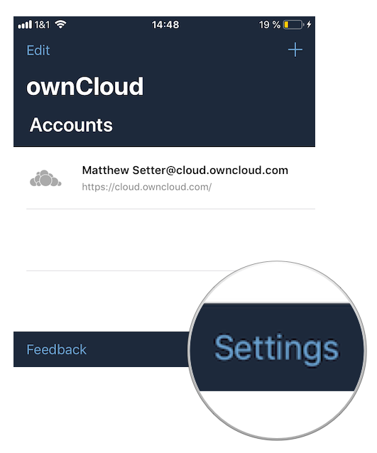
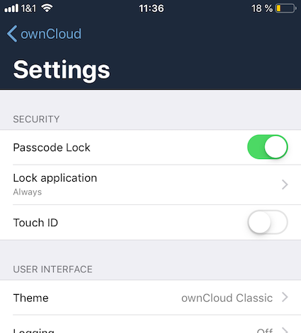
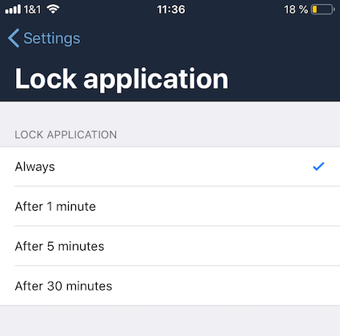
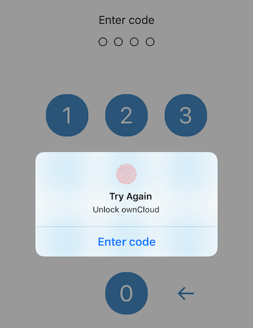
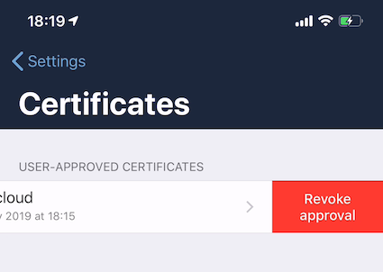
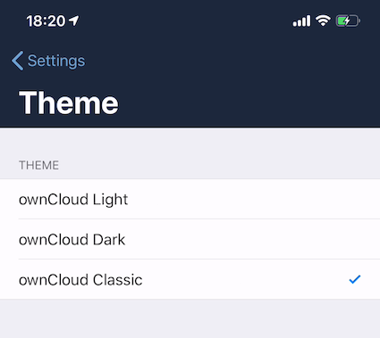
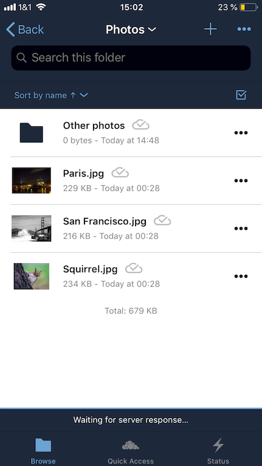
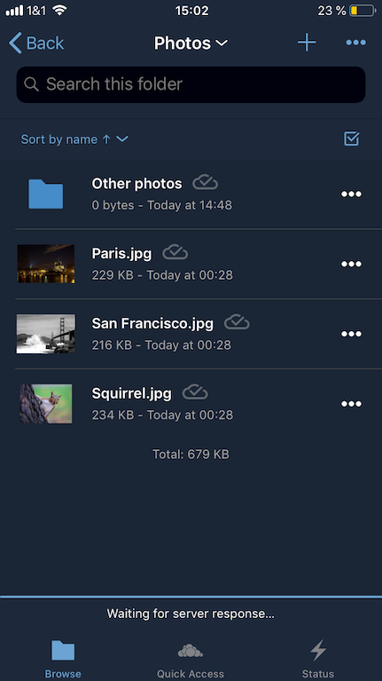
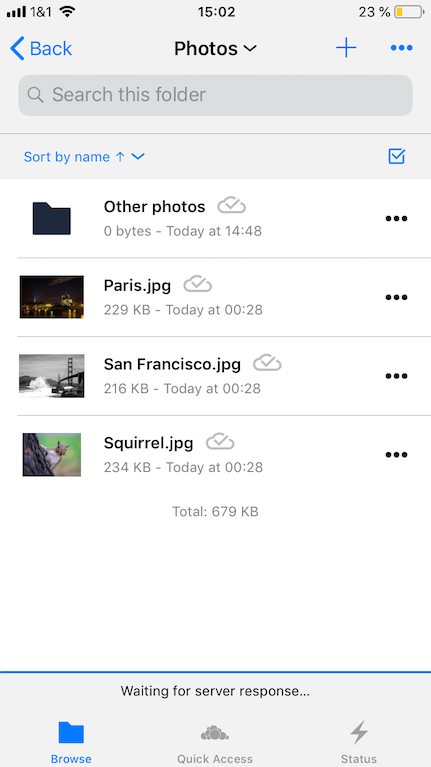
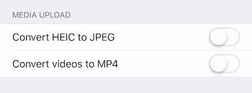

Configure Settings
Introduction
This guide steps you through how to configure ownCloud’s iOS App for iPhone and iPad. It covers security, theme, logging, and media upload settings.
Settings Screen
To manage the settings in ownCloud’s iOS App for iPhone and iPad, click Settings in the bottom right-hand corner of the Accounts List view.

Security
Passcode
To protect access to the iOS app with a Passcode, enable Passcode Lock in the Setting’s Security section. You will then be prompted to enter, and repeat, a 4-digit Passcode. If a Passcode was set, the file provider extension in Files.app or in other third party apps will be locked too. The file provider presents a UI to unlock the Passcode.

Lock Delay
When a Passcode is enabled, the app will be locked every time you change to another application. However, under , you can choose to only lock the application after 1, 5, or 30 minutes, instead of "immediately", which is the default.

Biometrical Lock
After a Passcode has been created, a Biometrical Lock, or Touch ID, can also be used to gain access to the app. To enable it enable Touch ID in the Setting’s Security section, and then enter your 4-digit Passcode. The next time you need to authorise access to the app, you will be able to enter either your Passcode, or use your stored biometrical data.

Trusted Certificates
View Previously Approved Certificates
To view previously approved certificates, navigate to (for any one of your registered accounts), and you will see them listed in the "User-Approved Certificates" section.
Inspect Previously Approved Certificates Details
To view previously approved certificates, swipe left on any of the accounts in the accounts list and click Edit. Then, under "SERVER URL", click Certificate Details. You will then be able to see all of the certificate’s details.
Revoke Previously Approved Certificates

To revoke one or more previously approved certificates, first navigate to (for any one of your registered accounts). Then, in the "User-Approved Certificates" section, swipe left on the certificate(s) that you wish to revoke and press Revoke approval.
Themes
The iOS app comes with three themes:
-
Light
-
Dark; and
-
Classic
To change the theme, navigate to , and pick the one that you want.

| Classic theme | Dark theme | Light theme |
|---|---|---|
 |
 |
 |
Logging
The ownCloud iOS app has built-in logging functionality, available under . To find out more, please refer to the logging section of the Troubleshooting guide.
Media Upload (Conversion)
When image and video files are uploaded, they can be converted to the industry-standard JPEG and MP4 respectively. This is not done by default.

Image
To convert (the very efficient) HEIC (High Efficiency Image File Format) images to more compatible JPEG images, enable Convert HEIC to JPEG under .